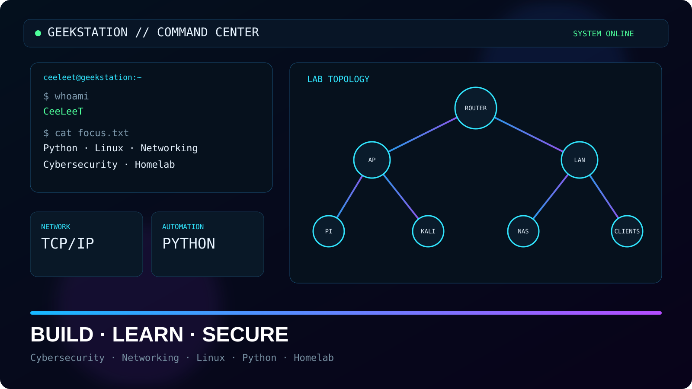

WELCOME TO MY DIGITAL LAB
GEEKSTATION
CYBERSECURITY · NETWORKING · LINUX · PYTHON · HOMELAB
Mein persönliches IT-Lab mit Projekten, Dokumentation und praktischen Experimenten rund um Netzwerke, Linux, Python und defensive Cybersecurity.

Featured Projects
Ausgewählte Projekte aus meinem Lab
Cybersecurity Lab Dashboard
Dashboard für Lab-Inventar, Lernziele und lokale Notizen.
Network Scanner
Host Discovery für eigene oder autorisierte Netzwerke.
Linux System Monitor
Uptime, Kernel, Load, RAM und Disk direkt im Terminal.
Project Archive
Repos, Labs, Experimente & Dokumentation
Notizen und Dokumentation rund um Kali Linux.
PythonLEARNINGPython-Notizen, Links und kleine Skripte.
TerminalDOCSTerminal- und Command-Line-Dokumentation.
WindowsDOCSWindows-Notizen und technische Referenzen.
CodeARCHIVEÄlteres Code- und Referenz-Repository.
GitHubALL REPOSAlle öffentlichen Repositories ansehen.
Tech Stack
Homelab Focus
Linux & System AdministrationACTIVE
Networking & ProtocolsACTIVE
Python & AutomationBUILDING
Cybersecurity LabLEARNING
Homelab Topology
Vereinfachte Darstellung meines Lern- und Testnetzwerks
Über mich
BUILD. BREAK. UNDERSTAND. IMPROVE.
Ich dokumentiere hier meinen Weg tiefer in Netzwerk- und Security-Themen. Der Schwerpunkt liegt auf praktischem Lernen mit Linux, Python, Netzwerkdiagnose und meinem Homelab. Security-Tests finden ausschließlich in eigenen oder ausdrücklich autorisierten Umgebungen statt.